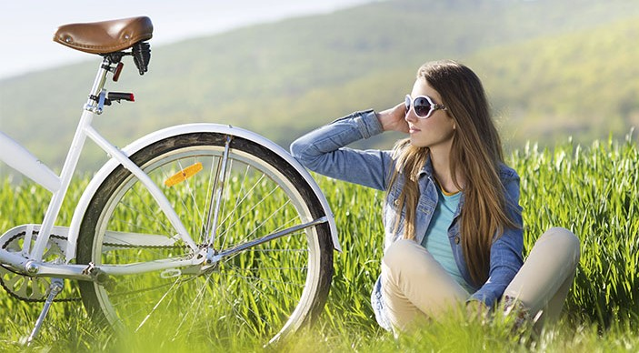
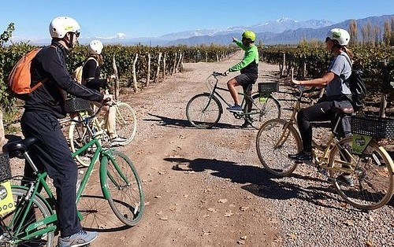
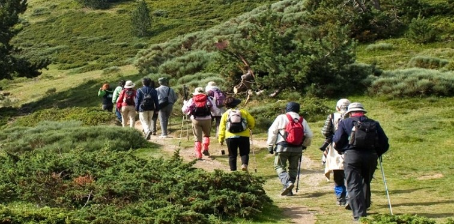
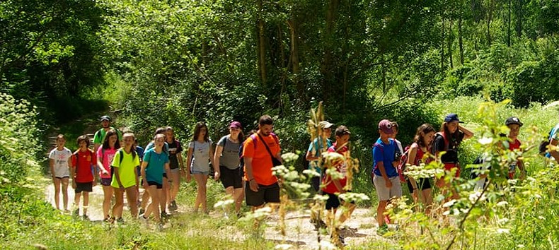
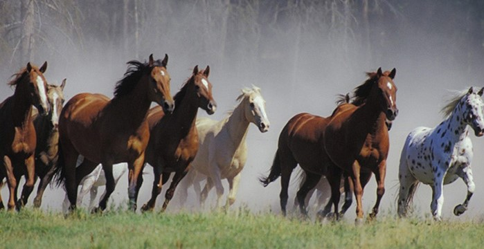

Nuestras Actividades
- Trekking
- - Caminatas por senderos con fabulosas vistas
- Avistaje De Aves
- - Más de 200 tipo de Aves para ser fotografiadas
- Cabalgatas
- - Nuestras cabalgatas están adaptadas a las necesidades y habilidades de sus participantes
- Paseo En bicicleta
- - Disfrutaremos de los paisajes más bonitos que rodean nuestra estancia en este tour en bicicleta
- Tiro Con arco Y Flecha
- - Viví la experiencia : la Magia del Tiro con Arco que te proponemos
- Desayuno De Campo
- Asado y Asado Vegetariano
- 
- 
- 
- 
- 